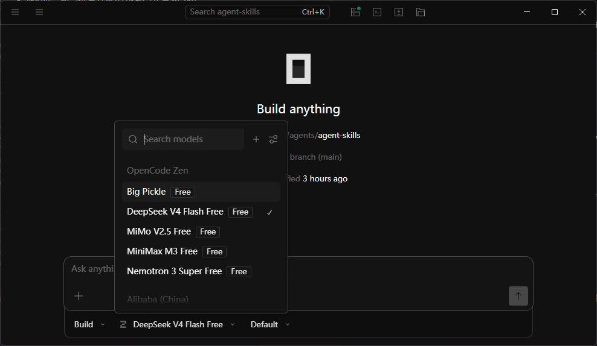

OpenCode实战指南：免费AI编程Agent + 免费大模型，零成本搞定代码开发
AI编程不该这么贵
2026年，AI编程工具已经是开发者的标配。但看看价格：
- Claude Code：$20/月起，限80次/月
- Cursor Pro：$20/月
- GitHub Copilot Business：$19/月/人
如果你是个人开发者或小团队，每月花几百块在AI编程上确实肉疼。
好消息是，有一个完全开源、MIT许可、168K GitHub Stars的替代方案——OpenCode。更好的消息是，它可以搭配多个免费大模型使用，真正实现零成本AI编程。
这篇文章教你：从安装到配置到实战，用OpenCode + 免费模型搞定日常开发。
OpenCode是什么
OpenCode不是一个聊天机器人，它是一个Agentic编码助手——可以理解你的项目结构、读写文件、执行终端命令、运行测试，并自主迭代直到任务完成。
核心信息
| 维度 | 详情 |
|---|---|
| 开发者 | Anomaly Innovations（SST团队） |
| GitHub Stars | 168,000+ |
| 许可证 | MIT（完全免费开源） |
| 语言 | Go 编写，单二进制文件 |
| 月活开发者 | 750万+ |
| 模型支持 | 75+ AI模型提供商 |
| 平台 | CLI + 桌面应用 + VS Code / Cursor / Neovim / JetBrains / Zed |
| 数据安全 | 不存储你的代码或上下文 |
与竞品的定位对比
| 特性 | OpenCode | Claude Code | Cursor | GitHub Copilot |
|---|---|---|---|---|
| 开源 | ✅ MIT | ❌ | ❌ | ❌ |
| 免费使用 | ✅ | ❌ $20/月 | ❌ $20/月 | ❌ $19/月 |
| 模型选择 | 75+（可切换） | 仅Claude | 多模型 | 仅GPT/Claude |
| 本地模型 | ✅ Ollama | ❌ | 有限 | ❌ |
| Agentic能力 | ✅ | ✅ | ✅ | 部分 |
| 数据存储 | 不存储 | Anthropic服务器 | 云端 | GitHub服务器 |
一句话总结：OpenCode是"模型自由"的AI编程Agent——你选模型、你控数据、你不花钱。
安装与配置
方式一：CLI安装（推荐，Linux/Mac）
# 一行命令安装
curl -fsSL https://opencode.ai/install | bash
# 验证安装
opencode --version
方式二：桌面版安装（Windows/Mac/Linux）
从 GitHub Releases 页面下载对应平台的安装包：
下载地址：https://github.com/anomalyco/opencode/releases
- Windows：
.exe安装程序 - macOS：
.dmg文件 - Linux：
.AppImage或.deb
方式三：IDE扩展
OpenCode提供以下IDE扩展（在各自插件市场搜索"OpenCode"即可）： - VS Code / Cursor - Neovim - JetBrains（IntelliJ / WebStorm / PyCharm等） - Zed
配置模型
安装完成后，第一步是配置AI模型。OpenCode提供多种方式：
免费层（无需任何费用）
# 直接启动，自动使用免费的Big Pickle模型
opencode
免费层会分配Big Pickle模型（OpenCode内部模型），有一定额度限制，适合体验和轻量使用。
OpenCode Go（$5首月/$10月续费）
如果免费层额度不够，Go订阅提供DeepSeek V4 Flash等开源模型的大额度访问：
# 登录后自动切换到Go层级
opencode login
自带API Key（按量付费）
你也可以配置自己的API Key：
// ~/.config/opencode/config.json
{
"provider": "deepseek",
"model": "deepseek-v4-flash",
"apiKey": "sk-your-deepseek-key"
}
支持的提供商包括：OpenAI、DeepSeek、Google、xAI（Grok）、OpenRouter等。
⚠️ 注意：Anthropic在2026年1月封禁了OpenCode使用Claude模型。如需使用Claude级别的能力，建议用DeepSeek V4 Pro或MiMo V2.5 Pro替代。
本地模型（Ollama）
如果你有本地GPU，可以连接Ollama运行私有模型：
// ~/.config/opencode/config.json
{
"provider": "ollama",
"model": "qwen3.6:27b",
"baseUrl": "http://localhost:11434"
}
免费可用模型深度对比
这是本文的核心——哪些模型可以免费或极低成本用于OpenCode编程？

OpenCode Zen 免费模型列表：Big Pickle、DeepSeek V4 Flash、MiMo V2.5、MiniMax M3、Nemotron 3 Super均可免费使用
一览表
| 模型 | 发布方 | 总参/激活 | 上下文 | SWE-bench Pro | 多模态 | 免费方式 |
|---|---|---|---|---|---|---|
| DeepSeek V4 Flash | 深度求索 | 284B/13B | 1M | — | ❌ | OpenCode Go / DeepSeek官方免费 |
| MiMo V2.5 Pro | 小米 | 1T/42B | — | 57.2% | ✅（文/图/视频/音频） | OpenRouter免费额度 |
| MiniMax M3 | MiniMax | —/— | 1M | 59.0% | ✅（图/视频/桌面操作） | 促销价$0.30/M输入 |
| Nemotron 3 Super | NVIDIA | 550B/55B | — | — | ❌ | NVIDIA API免费额度 |
| Big Pickle | OpenCode | 未公开 | — | — | ❌ | OpenCode免费层默认 |
DeepSeek V4 Flash — 性价比之王
为什么推荐：1M token上下文 + MIT开源 + 极致低价
- 284B总参数 / 13B激活参数，MoE架构
- 1M token上下文窗口——可以把整个中型项目扔进去
- API价格：¥1/百万token输入，缓存命中仅¥0.02/百万
- DeepSeek官网有免费额度，OpenCode Go订阅也包含
最适合：日常编码、代码审查、项目重构——需要理解大量上下文但不需要多模态的场景。
在OpenCode中使用：
# 如果有DeepSeek API Key
opencode --provider deepseek --model deepseek-v4-flash
# 或通过OpenCode Go订阅自动使用
MiMo V2.5 — 小米的多模态黑马
为什么关注：手机厂商做的AI模型，全球排名第8
- 1T总参数 / 42B激活参数，MoE架构
- SWE-bench Pro 57.2%，超越多数闭源模型
- 原生多模态：文本、图像、视频、音频全支持
- $1/百万token输入（Claude Opus的1/5）
Hunter Alpha事件：MiMo V2.5上线时悄悄登顶OpenRouter日用量排行榜，整个AI社区以为是DeepSeek V4提前泄露，结果揭晓是小米——2026年最有趣的行业彩蛋之一。
最适合：需要理解截图/UI/设计稿的前端开发、多模态任务、长horizon Agent工作流。
在OpenCode中使用：
# 通过OpenRouter（有免费额度）
opencode --provider openrouter --model xiaomimimo/mimo-v2.5-pro
MiniMax M3 — 6月新秀
为什么关注：首个同时具备前沿编码+1M上下文+原生多模态的开源模型
- 2026年6月1日发布，全新MSA稀疏注意力架构
- SWE-bench Pro 59.0%，Terminal-Bench 2.1 66%
- 1M token上下文，且处理超长文本时每token计算成本仅为上代1/10
- 原生支持图像、视频输入 + 桌面计算机操作
- 促销价：$0.30/百万输入token（正常$0.60）
最适合：复杂编码Agent任务、超长代码库理解、需要同时处理代码+截图的场景。
在OpenCode中使用：
# 通过OpenRouter
opencode --provider openrouter --model minimax/minimax-m3
Nemotron 3 Super — NVIDIA的美国最强
为什么关注：NVIDIA亲自下场做模型，推理速度极快
- 550B总参数 / 55B激活参数，MoE架构
- Artificial Analysis Intelligence Index 36分（美国开源第二，仅次于刚发布的Ultra 48分）
- 推理速度比同级模型快5倍，成本低30%
- NVIDIA API有免费试用额度
最适合：需要极快响应速度的场景、NVIDIA GPU用户（原生优化）。
Big Pickle — 入门够用
为什么它存在：OpenCode免费层的默认模型，零配置即用
- 模型身份未公开（社区猜测基于GLM系列）
- 有每日额度限制，超限会报"too many requests"
- 性能"adequate"——日常小任务够用，复杂项目力不从心
最适合：首次体验OpenCode、简单代码补全、轻量级任务。
实战：用OpenCode + 免费模型完成编码任务
Plan模式 vs Build模式
OpenCode提供两种工作模式：
- Plan模式：先分析问题、制定计划，不直接修改代码
- Build模式：直接执行任务，读写文件、运行命令
# 进入项目目录
cd my-project
# 启动OpenCode
opencode
# 在交互界面中切换模式
/plan # 切换到Plan模式
/build # 切换到Build模式
最佳实践：对于复杂任务，先用Plan模式让模型理解需求并制定方案，确认后再切到Build模式执行。
AGENTS.md：项目级上下文
在项目根目录创建 AGENTS.md 文件，OpenCode会自动读取作为项目上下文：
# AGENTS.md
## 项目信息
- 技术栈：Python 3.13 + FastAPI + PostgreSQL
- 包管理：uv
- 测试框架：pytest
## 编码规范
- 使用类型注解
- 函数注释用中文
- 错误处理统一用自定义Exception类
## 项目结构
- src/ : 源代码
- tests/ : 测试文件
- scripts/ : 运维脚本
常见问题与解决
| 问题 | 原因 | 解决 |
|---|---|---|
| "too many requests" | 免费层额度用完 | 升级到Go（$5/月）或自带API Key |
| Claude模型不可用 | Anthropic 2026年1月封禁 | 切换到DeepSeek/MiMo/Gemini |
| Ollama连接失败 | 配置格式问题 | 手动编辑 ~/.config/opencode/config.json |
| 响应很慢 | 免费层服务器负载高 | 切换到自带Key或本地模型 |
| 中文输出乱码 | 终端编码问题 | 确保终端使用UTF-8编码 |
选型建议
你的情况是什么？
│
├── 零预算体验 → Big Pickle（OpenCode免费层）
│
├── 日常编码（预算极低）
│ ├── 长上下文需求 → DeepSeek V4 Flash（1M tokens）
│ └── 快速响应需求 → Nemotron 3 Super
│
├── 需要多模态
│ ├── 图片/视频/音频理解 → MiMo V2.5 Pro
│ └── 编码+截图+桌面操作 → MiniMax M3
│
├── 追求编码最高准确率
│ └── MiniMax M3（SWE-bench Pro 59%）
│
├── 有本地GPU（24GB+）
│ └── Ollama + Qwen 3.6-27B（完全离线免费）
│
└── 已有订阅
├── ChatGPT Plus → 配置OpenAI Key用GPT-5.5
├── SuperGrok/X Premium → 直接OAuth连接Grok
└── Google One AI → 配置Gemini Key
总结
OpenCode让"零成本AI编程"不再是噱头：
- 工具免费：MIT开源，168K Stars，不锁定任何厂商
- 模型免费：Big Pickle免费层 + DeepSeek V4 Flash / MiMo V2.5等模型都有免费额度
- 数据安全：代码不上传到任何服务器，可连接本地模型完全离线
如果你还在为AI编程工具的月费犹豫，OpenCode是目前最好的零成本起步方案。先用免费层体验，确认好用再考虑$5/月的Go订阅解锁更多模型——这可能是2026年性价比最高的开发者投资。
下一步值得关注
- MiniMax M3开源权重：承诺发布后可本地部署，编码能力直逼GPT-5.5
- Nemotron 3 Ultra：6月1日Computex发布的550B/55B模型，美国最强开源
- Grok Build集成：SuperGrok用户已可通过OAuth零配置使用
本文数据截至2026年6月2日。模型能力、价格和免费额度可能随时变化，建议以各平台最新公告为准。
参考文献
- OpenCode官方网站. https://opencode.ai/
- OpenCode GitHub仓库. https://github.com/anomalyco/opencode
- OpenCode Releases（桌面版下载）. https://github.com/anomalyco/opencode/releases
- OpenCode Go订阅. https://opencode.ai/go
- OpenCode Zen精选模型. https://opencode.ai/zen
- DeepSeek V4 Preview Release, April 24, 2026. https://api-docs.deepseek.com/news/news260424
- Xiaomi MiMo-V2.5-Pro Review & Benchmarks, buildfastwithai.com, 2026. https://www.buildfastwithai.com/blogs/xiaomi-mimo-v2-5-pro-review-2026
- MiniMax M3 Developer Guide, lushbinary.com, June 1, 2026. https://lushbinary.com/blog/minimax-m3-developer-guide-benchmarks-pricing-msa-architecture
- NVIDIA Nemotron 3 Ultra Launch, Artificial Analysis, June 1, 2026. https://artificialanalysis.ai/articles/nvidia-nemotron-3-ultra-launch-announced
- xAI Grok Build in OpenCode, memeburn.com, May 21, 2026. https://memeburn.com/how-to-use-grok-in-opencode-full-setup-guide-with-xai-api/
- OpenCode: AI-Assisted Coding with Free and Local LLMs, infralovers.com, February 2026. https://www.infralovers.com/blog/2026-02-27-opencode-free-local-llms/
- Open Source AI Coding Agent Guide 2026, ssntpl.com. https://ssntpl.com/opencode-open-source-ai-coding-agent-guide/
推荐搭配装备
善其事，利其器。以下硬件能最大化你的编程体验👇
🔗 通过以上链接购买可支持本站持续运营 🙏